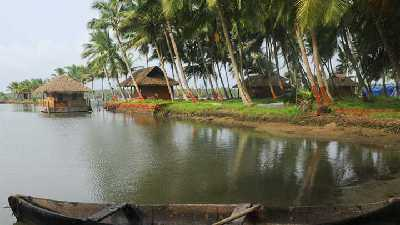

Kasaragod district is one of the 14 districts in the southern Indian state of Kerala.
Kasaragod was a part of the South Canara district of the erstwhile Madras Presidency.
It then became a part of Kannur district of Kerala.
Kasaragod was declared as a district on 24 May 1984.
Parappa wildlife santuary
Kasargod is a place which is blessed with nature's beauty and tranquility. Parappa Wildlife Sanctuary is one such place which offers both.
It also offers natural habitation to many wildlife creatures such as turtle, porcupine, pig, Malabar Hornbill, slender loris and jungle cat.
Cheruvathur

Cheruvathur is a cosy small town in the Kasaragod district of Kerala, located only 10 kilometres south of the major town of Nileshwaram.
The place is known for being the birthplace of great 19th-century poet Mahakavi Kuttamath of Kerala.
His work on musical drama and poem compilations is an excellent source of literary inspiration in Cheruvathur.
Ananthapura Lake Temple

Ananthapura Lake Temple, a serene Hindu temple built in the middle of a lake located in Village Ananthapura, Kasargod,
is a renowned tourist traction in God's Own Country, the South Indian state of Kerala, India.
Walk down the entrance, and you'll notice how tranquil and pleasant the location is